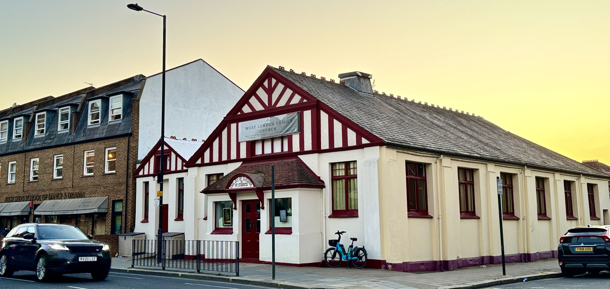
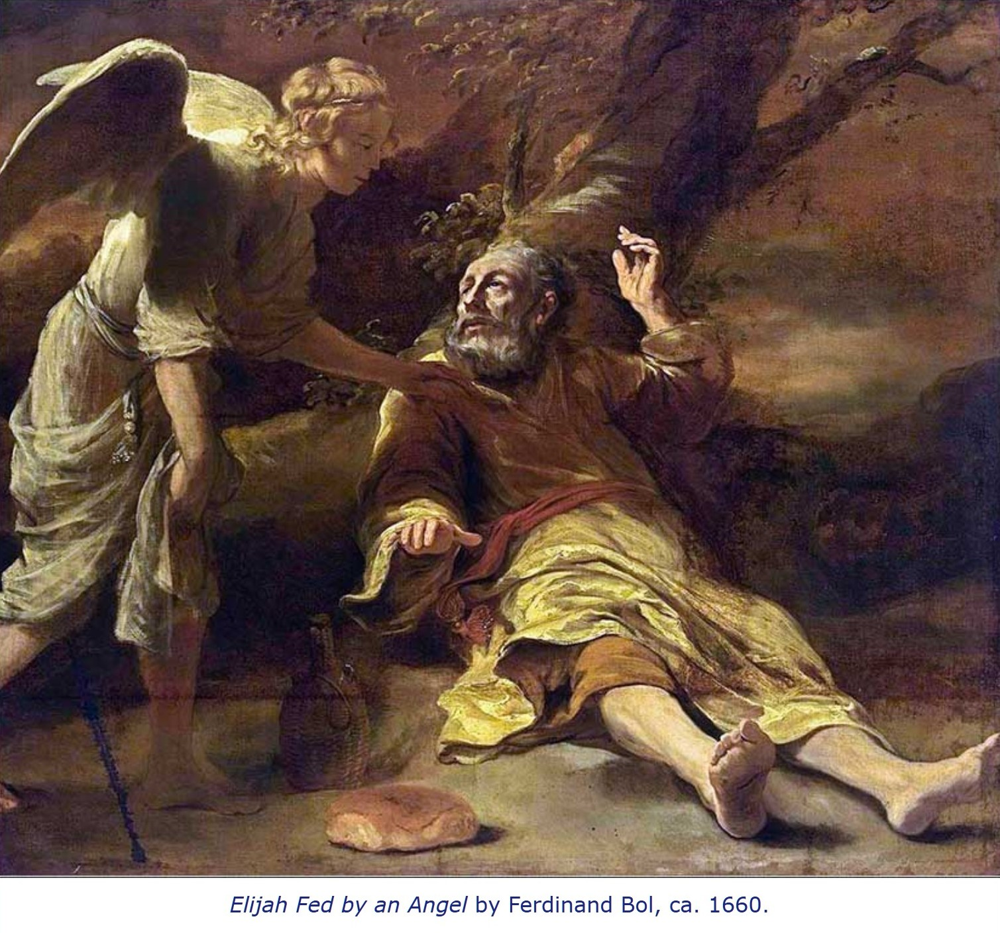
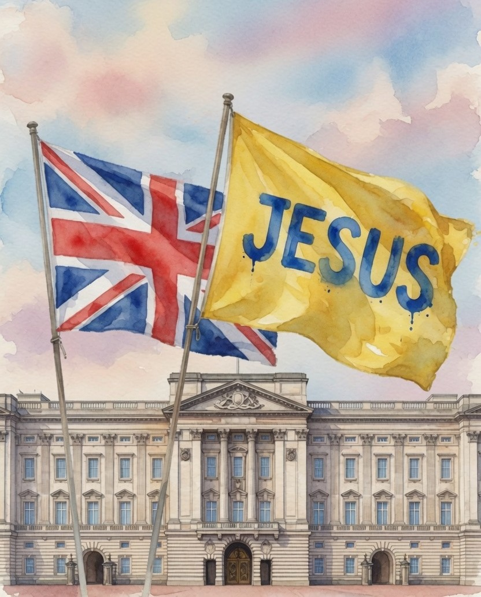

2026 JUN
House of Prayer London
사랑하는 동역자님께 주님의 평안을 전합니다.
한 달에 한 번은 꼭 소식지를 나눠야겠다 싶었는데, 어느새 세 번째가 되었습니다. 지난 여름부터는 저희 가정과 기도의 집이 여러모로 홀로서기를 해야 하는 상황이어서, 사역도 나누고 동역자를 찾는 마음으로 시작하게 되었구요. 메시지는 제 자신을 위해서라도 준비하며 나누려 하고, 밖으로는 잘 알려지지 않는 영국 소식들도 함께 정리해 보고, 개인적인 후원 요청은 여전히 부담이 되어 소식지의 마지막에 남겨놓고 있습니다.
선교사로서 보이고픈 모습은, 어쩌면 하늘을 향해 불과 비를 구하던 갈멜산의 엘리야, 복음으로 인해 온몸에 새겨진 수많은 상처에도 이방 곳곳에 교회를 세우던 사도 바울, 그리고 죄인들을 눈물로 끌어안으며 사랑의 빚을 갚고자 했던 이름없는 제자들과 같은 그런 모습일 것입니다.

그런데 정작 더 많은 시간 씨름하며 머무는 자리는, 그저 감추고 싶은 모습들입니다. 이세벨의 위협에 두려워 떨며 갈멜산에서 200킬로미터 남쪽 브엘세바까지 도망치다 기력이 다해 로뎀나무 아래 누워 있는 엘리야의 모습이 그중 하나가 아닐까 싶습니다.
그럴 때에는 어김없이 지금의 역할과 부르심을 여러 번 의심하게 되고, 스스로를 많이도 책망하게 되며, 의미있는 돌이킴이 이루어지기도 하지만, 대개는 답을 찾지 못한 채 잠을 이루지 못하곤 합니다. 감사한 것은, 부끄럽고 초라해 보이는 그런 때에도 조용히 도착하는 것이 있는데, 허기를 달래줄 음식이었습니다.
"이에 일어나 먹고 마시고 그 음식물의 힘을 의지하여 사십 주 사십 야를 가서, 하나님의 산 호렙에 이르니라"
[왕상 19:8]그 음식물이 엘리야를 향한 현실의 위협을 해결해 주거나 부르심을 회복시키지 못하지만, 분명한 것은, 엘리야가 그 힘을 의지하여 다시 일어나 40일을 밤낮으로 걸어 하나님의 산 호렙에 이를 수 있었다는 것입니다.
그곳에서 하나님은 엘리야의 시대적 소명을 다시 회복시키시어, '엘리사에게 그의 부르심을 계승하게 하셔서, 하사엘을 아람 왕으로, 예후를 이스라엘 왕으로 세우게 하심으로' 하나님의 심판과 구원의 계획을 이루어 가셨습니다.
엘리야에 비길 수 없는 작은 자이지만, 엘리야의 하나님이 저희의 하나님이시고, 그를 부르셨던 세미한 음성이 또한 저희를 이끌어 이 땅에 기도의 집을 세워가게 하셨기에, 로뎀나무 아래에 가장 약한 모습으로 다시 머물게 되어도, 또다시 기운을 차리게 하시는 은혜로 주님과 목자이신 예수께로 나아갈 수 있을 것입니다.
보여지는 어떤 결실보다, 저희 가정이 주의 부르심을 따라 나아갈 수 있도록 목자의 마음으로 기다려 주시고, 복음에 함께 빚진 자로서 기도로 동행해 주셔서 감사드립니다.
(이 달에는 동일한 심정으로 주님을 따르는 선교사님들을 함께 기억하며 메시지를 대신하여 나누게 되었습니다.)

영국도 다르지 않습니다.
좌우의 대립이 이전보다 극심해진 상황입니다. 지난 몇 해 무슬림을 중심으로 'Free Palestine' 구호를 외치는 행진이 끊이지 않았고, 불법 이민자를 포함한 난민은 더 이상 수용이 어려운 지경에 이르렀는데, 다민족·다종교 사회로의 정치적 뿌리는 선거를 통해 빠르게 내려지고 있어, 영국 내 여러 지역이 이슬람 공동체의 독자적 권위 아래 운영되고 있기도 합니다.
영국 왕 찰스 3세는 공식적으로 영국 성공회의 "신앙의 수호자(Defender of the Faith)"이지만, 즉위 이전부터 영국 내 "모든 종교인의 보호자(Defender of Faiths)"가 되겠다는 뜻을 여러 차례 천명하여 기독교 국가로서의 정체성을 스스로 저버리고 있다는 평가를 받고 있습니다.
또한 지난 3월에는 유럽에서 가장 관대한(?) 낙태 법안이 영국에서 통과되어 약물에 의한 자기낙태(self-managed abortion)는 이제 출산 직전까지도(의료기관은 24주까지) 허용이 됩니다. 정부차원의 가장 강력한 통제방안인 디지털 ID 도 총리의 강한 의지로 시행을 준비하고 있습니다.
이에 반발하듯, 지난 5월 7일 영국 지방선거에서는 민족주의 극우정당으로 불리며 반이민, 반이슬람, 친기독교(?)를 기치로 내건 개혁당(Reform UK)이 지방의원 단 2석에서 1,453석이 되었고, 진보측 집권 노동당은 1498석을 잃어 역사적인 참패를 당했는데, 그간 눌려 있던 또다른 민심이 폭발해 버린 결과라 여겨집니다.
바로 며칠 전에는 거짓 신고를 받은 영국 경찰이, 여러차례 칼에 찔려 응급조치가 필요했던 백인 청년을 수갑에 채워 죽음에 이르게 한 사건이 알려지며, 이전에 "흑인의 인권도 중요하다"는 시위가 미국과 유럽에서 확산되었듯, "백인의 인권도 중요하다"는 시위가 개혁당 리더를 중심으로 영국 전역으로 빠르게 확산되고 있기도 합니다.
영국 왕실과 위정자들을 위해, 교회를 위해, 무엇보다 이 땅의 부흥을 위해 기도해 왔습니다. 말이든 글이든, 주께서 이 나라를 통해 이루실 일들을 소망하며 선포해 왔습니다. 그런데 계속해서 들려오는 소식들에 마음이 상하고, 분노가 일고, 답답한 마음으로 주님 앞에 무릎을 꿇게 됩니다.
좌우 어느편도 지지할 수 없는 모습이어서, 주님의 마음과 지혜를 구하고, 미움이 아닌 사랑으로 이 땅을 계속해서 품어낼 수 있도록, 모든 영역에서 주의 뜻과 통치가 이루어져 참된 길과 진리, 생명이신 예수께로 나아올 수 있도록 기도하고 있습니다. 그리고, 또한 기도를 부탁드립니다.
"우리는 마땅히 기도할 바를 알지 못하나 오직 성령이 말할 수 없는 탄식으로 우리를 위하여 친히 간구하시느니라"
[롬 8:26]